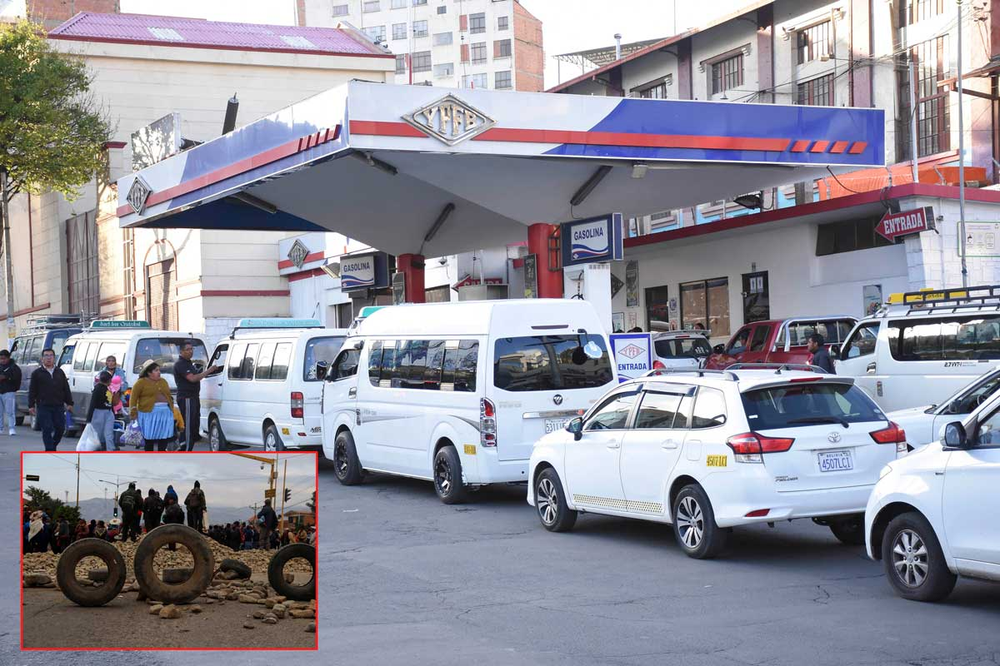
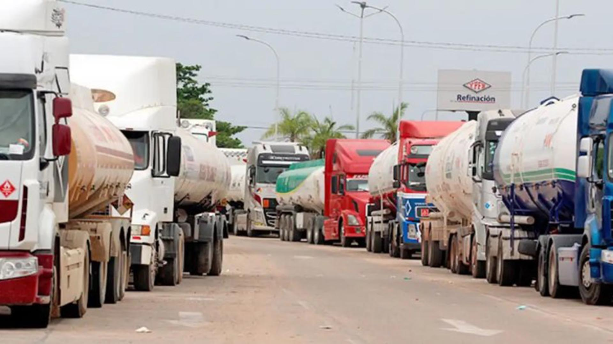

Simulador de Abastecimiento de Carburantes
Calcula día a día cuánto combustible queda en una estación de servicio, cuándo llegará al nivel crítico y cuándo se agotará completamente.

Situación del Escenario
En el contexto del paro indefinido en La Paz, las estaciones de servicio enfrentan una situación crítica: reciben menos carburante del que necesitan distribuir cada día. Esto ha generado filas de varias horas y un mercado negro donde el combustible se vende a precios exorbitantes.
Este simulador permite modelar matemáticamente cuánto tiempo durará una reserva de carburante según el consumo diario y el nivel de reabastecimiento. El modelo aplica la siguiente fórmula básica:
Reserva(día N) = Reserva(día N-1) + Reabastecimiento − Consumo
- 🔴 Crítico Reserva ≤ Nivel crítico definido
- 🟡 Advertencia Reserva cercana al nivel crítico
- 🟢 Normal Reserva por encima del nivel crítico

Simulador
Resultados del Cálculo
Datos de Prueba para Verificar
Aplica el siguiente caso de estudio para comprobar que el simulador calcula correctamente los días de reserva.
Caso de Estudio 1 — Gasolinera en Paro
| Reserva inicial | 10,000 litros |
| Consumo diario | 1,200 litros/día |
| Reabastecimiento diario | 300 litros/día |
| Nivel crítico | 2,000 litros |
Resultado esperado: Con un déficit neto de 900 L/día (consumo 1200 − reabastecimiento 300), la reserva llega al nivel crítico aproximadamente el Día 9 y se agota alrededor del Día 12.
Caso de Estudio 2 — Reabastecimiento Parcial
| Reserva inicial | 5,000 litros |
| Consumo diario | 800 litros/día |
| Reabastecimiento diario | 500 litros/día |
| Nivel crítico | 1,000 litros |
Resultado esperado: Con un déficit de 300 L/día, la reserva llega al nivel crítico alrededor del Día 14 y se agota cerca del Día 17.
¿Qué nos enseña este modelo?
El modelo matemático de este simulador demuestra con datos concretos cómo una brecha pequeña entre consumo y reabastecimiento puede agotar una reserva en pocos días durante una crisis.
El Tiempo se Acorta
Un déficit de apenas 900 L/día puede agotar 10,000 litros en menos de 2 semanas.
Nivel Crítico = Umbral de Alerta
Definir un nivel mínimo permite tomar decisiones antes de que la situación sea irreversible.
Datos Salvan Vidas
Modelar el consumo permite priorizar el combustible para ambulancias y hospitales.
Reabastecimiento Clave
Duplicar el reabastecimiento puede extender la reserva de días a semanas o meses.